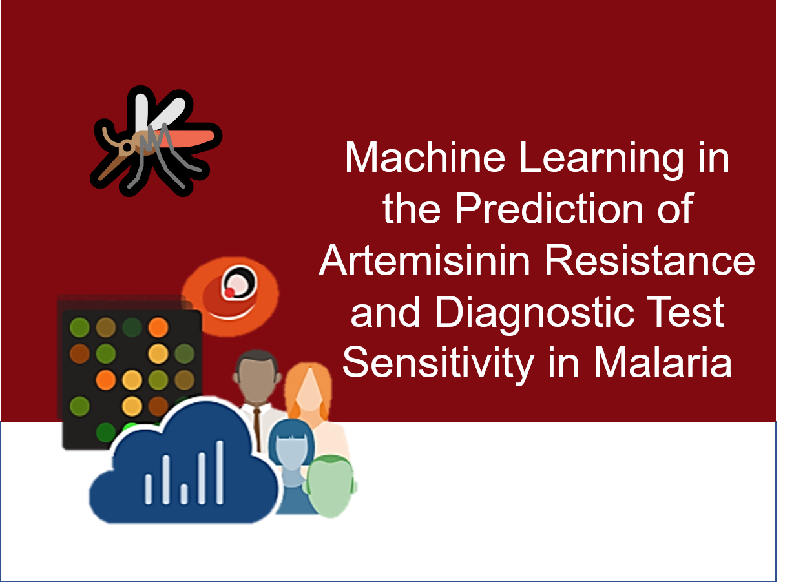

Hi! I'm Colby...
-
Mathematics
Statistical Modeling
Bayesian Nets
Operations Research
Numerical Logic -

Machine Learning
Algorithm Design
Natural Language Processing
Deep Learning
Artificial Intelligence -
Computational Biology
Human Genomics
Phylogenetics
Molecular Sequence Analysis
Infectious Diseases -
Distributed Computing
Apache Spark (Databricks)
Cluster Computing (MPI/SNOW)
GPU-Based Processing (CUDA)
High Performance Computing -

Programming
R/SparkR
Python/PySpark
SQL
Visual Basic -

Web and Design
HTML5+CSS
LaTeX
API Development
Visualization
-
Genomics, Distributed Computing, Data Engineering
Genomics Data Lake eBook
An eBook designed to help bioinformatics teams scale up their genomics research in the Azure cloud.
Centralizing your data in a data lake has the potential to help scale and automate bioinformatics pipelines (including secondary and tertiary analyses and machine learning) in cloud. Azure Data Lake is touted as a limitless service place for storing your data. It provides the ability to store and organize petabyte-size files and connect to distributed computing resources (like Azure Databricks) with ease. In addition, Data Lake offers enterprise-grade security and role-based access controls.
In this book, we discuss the utility of Azure Data Lake and how this flexible and scalable storage option promotes collaboration and scalability in your genomics practice while also ensuring a secure and stable environment for your genomics data. Plus, with its easy integration with other Azure services, orchestrating and automating data movements and bioinformatics pipelines has never been easier (or faster).
-
Genomics, Infectious Diseases, Bioinformatics
SARS-CoV-2 Variant Tracking
Building a visual dashboard for cataloging SARS-CoV-2 variants geographically.
Several new variants of the SARS-CoV-2 have been isolated in the United States, Mexico, and Canada. Many of the variants contain single variants of functional significance (e.g. S: N501Y increases transmissibility). To study the occurrence and co-circulation of these variants, we have developed an easy-to-use dashboard.
-
Genomics, Phylogenetics, Infectious Diseases
P. falciparum CSP Haploytyping
Modeling PfCSP haplotypes and their changes in protein interaction with human immunological proteins.
Today, the RTS,S malaria vaccine only provides partial protection (~36%) against Plasmodium falciparum in certain sub-Saharan African countries such as Ghana, though this vaccine previously showed efficacy well above 60% in previous clinical trials. Our study analyzes the diversity of the PfCSP gene across 88 samples from Ghana and we have derived 27 prevalent haplotypes. We further investigated these haplotypes by understanding how variations in this gene affect protein binding interactions with human immunological proteins (a human leukocyte antigen and a T cell receptor). By predicting and quantifying these interactions, we then created a candidate list of haplotypes that were validated using in vitro assays. Our findings may suggest potential sequences on which a next-generation malaria vaccine can be based.
-
Machine Learning, Distributed Computing, Data Engineering
Sparkitecture
A collection of "cookbook-style" scripts for simplifying data engineering and machine learning in Apache Spark.
Apache Spark is a highly-scalable, massively-parallel computing platform perfect for machine learning and data engineering tasks. Using distributed processing with the Spark API, users can perform various tasks on huge amounts of data using their their preferred language (Python, R, Scala, SQL, etc.), but often there is a bit of a learning curve to using the Spark functionality (PySpark or SparkR) even if the user is a pro at the base language. Sparkitecture is a ebook collection of various script to help make this process a little easier.
-

Genomics, Machine Learning, Infectious Diseases
Machine Learning in Malaria
Machine Learning Modeling in the Prediction of Artemisinin Resistance and Diagnostic Test Sensitivity in Malaria.
Parallel Processing and Ensemble Machine Learning Modeling for the Prediction of Artemisinin Resistance in Malaria (Malaria DREAM Challenge 2019 Submission).
The Malaria DREAM Challenge is open to anyone interested in contributing to the development of computational models that address important problems in advancing the fight against malaria. The overall goal of the first Malaria DREAM Challenge is to predict Artemisinin (Art) drug resistance level of a test set of malaria parasites using their in vitro transcription data and a training set consisting of published in vivo and unpublished in vitro transcriptomes. The in vivo dataset consists of ~1000 transcription samples from various geographic locations covering a wide range of life cycles and resistance levels, with other accompanying data such as patient age, geographic location, Art combination therapy used, etc. [Mok et al., (2015) Science]. The in vitro transcription dataset consists of 55 isolates, with transcription collected at two timepoints (6 and 24 hours post-invasion), in the absence or presence of an Art perturbation, for two biological replicates using a custom microarray at the Ferdig lab. Using these transcription datasets, participants will be asked to predict three different resistance states of a subset of the 55 in vitro isolate samples.
Modeling Plasmodium falciparum Diagnostic Test Sensitivity using Machine Learning with Histidine-Rich Protein 2 Variants.
Malaria, predominantly caused by Plasmodium falciparum, poses one of largest and most durable health threats in the world. Previously, simplistic regression-based models have been created to characterize malaria infections, though these models often only include a couple genetic factors. Specifically, the Baker et al., 2005 model uses two types of particular repeats in histidine-rich protein 2 (PfHRP2) to assert P. falciparum infection, though the efficacy of this model has waned over recent years due to genetic mutations in the parasite. In this work, we use a dataset of 406 P. falciparum PfHRP2 genetic sequences collected in Ethiopia and derived a larger set of motif repeat matches for use in generating a series of diagnostic machine learning models. Here we show that the usage of additional and different motif repeats proves effective in predicting infection. Furthermore, we use machine learning model explanability methods to highlight which of the repeat types are most important, thereby suggesting potential targets for future versions of rapid diagnostic tests.
-
Genomics, Phylogenetics, Infectious Diseases
StrainHub
Shiny web application for visualizing disease transmittion networks from phylogenetic trees.
Strainhub is designed as a web-based software to generate disease transmission networks and associated metrics from a combination of a phylogenetic tree and a metadata associated file. The software maps the metadata onto the tree and performs a parsimony ancestry reconstruction step to create links between the associated metadata and enable the construction of the network.
-
Genomics, Infectious Diseases
Genetic Capitalism in E. coli
Persistence of Genes that Confer Antimicrobial Resistance in the History of Escherichia coli Genomes
Antimicrobial resistance (AMR) in pathogenic strains of bacteria, such as Escherichia coli (E. coli), adversely impact personal and public health. In this study, we examine competing hypotheses for the evolution of AMR including: 1) "genetic capitalism" in which genotypes that confer antibiotic resistance are gained and not often lost in lineages, and 2) "stabilizing selection" in which genotypes that confer antibiotic resistance are gained and lost often. To test these hypotheses, we assembled a dataset that includes annotations for 409 AMR genotypes and a phylogenetic tree based on genome-wide single nucleotide polymorphisms from 29,255 isolates of E. coli. We used phylogenetic methods to count the times each AMR genotype was gained and lost across the tree and used model-based clustering of the genotypes with respect to their gain and loss rates. We demonstrate that many genotypes cluster to support the hypothesis for genetic capitalism while a few cluster to support the hypothesis for stabilizing selection. Comparing the sets of genotypes that fall under each of the hypotheses, we found a statistically significant difference in the breakdown of resistance mechanisms through which the AMR genotypes function. The result that many AMR genotypes cluster under genetic capitalism reflects that strong positive selective forces, primarily induced by human industrialization of antibiotics, outweigh the potential fitness costs to the bacterial lineages for carrying the AMR genotypes. We expect genetic capitalism to further drive bacterial lineages to resist antibiotics. We find that antibiotics that function via replacement and efflux tend to behave under stabilizing selection and thus may be valuable in an antibiotic cycling strategy.
-
R Package, Genomics
msgen
R functions for interfacing with the Microsoft Genomics service in Azure.
The Microsoft Genomics service in Azure can power genome sequencing using a cloud implementation of the Burrows-Wheeler Aligner (BWA) and the Genome Analysis Toolkit (GATK) for secondary analysis. The pipeline can take in multiple FASTQ and BAM files and provides alignment and variant outputs. The msgen package provides an interface to use the service from within R.
-
R Package, Genomics
parEBEN
Parallel Implementations of the Empirical Bayesian Elastic Net Cross-Validation in R.
The Empirical Bayesian Elastic Net (EBEN) algorithm was developed by Huang et al. for handling multicollinearity in generalized linear regression models. Historically, this has been used in the analysis of quantitative trait loci (QTLs) and gene-gene interactions (epistasis). In addition to the algorithm, the group also created the EBEN package for R. This package includes functions to generate the elastic nets for both binomial and gaussian priors. These functions are efficient and do not require large amounts of computational time. However, the package also includes functions for the cross-validation of those models. While essential, this step is a considerably more complex task. The cross-validation functions perform a sweep to determine hyperparameters and minimize prediction error. More specifically, an n-fold cross-validation sweep is performed to minimize error by trying combinations of two parameters (α and λ) in a stepped manner. Experimentally, it has been shown that this can take a rather extended amount of time, especially on larger datasets (as seen in genomics problems).

-

Human Genomics, Machine Learning
MPS-IIIB/NAGLU Prediction
PolyPhen2 + Machine Learning prediction of the effects of genetic mutations on mucopolysaccharidosis IIIB.

Let's Connect!
Want to collaborate, connect, or a consult? Let's chat and see how we can work together to do awesome things...